评估模型、提示词和智能体
你可以通过将模型、提示词和智能体的输出与真实数据进行比较并计算评估指标来对其进行评估。Foundry Toolkit 简化了这一过程。只需极少的工作量即可上传数据集并运行综合评估。
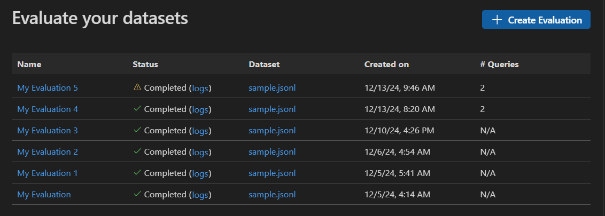
评估提示词和智能体
你可以在 Agent Builder 中选择 Evaluation 选项卡来评估提示词和智能体。在评估之前，请针对数据集运行你的提示词或智能体。
评估提示词或智能体的步骤：
- 在 Agent Builder 中，选择 Evaluation 选项卡。
- 添加并运行你要评估的数据集。
- 使用点赞和点踩图标对响应进行评分，并记录你的手动评估结果。
- 要添加评估器，请选择 New Evaluation。
- 从内置评估器列表中选择一个评估器，例如 F1 分数、相关性、连贯性或相似度。
[!NOTE]
使用 GitHub 托管的模型运行评估时，可能适用速率限制。
- 如果需要，选择一个模型作为评估的评判模型。
- 选择 Run Evaluation 以启动评估作业。
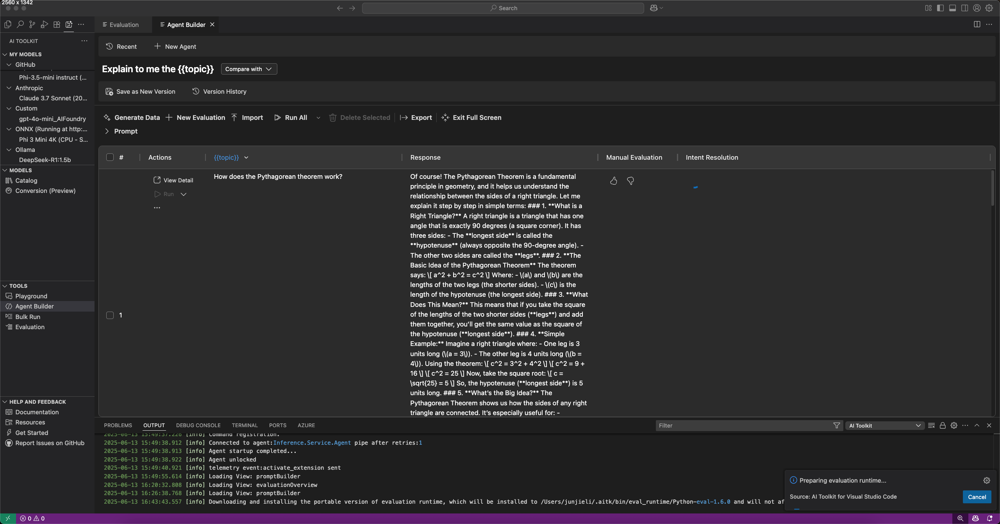
版本管理与评估比较
Foundry Toolkit 支持对提示词和智能体进行版本管理，因此你可以比较不同版本的性能。创建新版本后，你可以运行评估并与之前的版本比较结果。
保存提示词或智能体的新版本的步骤：
- 在 Agent Builder 中，定义系统提示词或用户提示词，添加变量和工具。
- 运行智能体或切换到 Evaluate 选项卡并添加要评估的数据集。
- 当你对提示词或智能体满意后，从工具栏中选择 Save as New Version。
- （可选）提供版本名称并按 Enter 键。
查看版本历史记录
你可以在 Agent Builder 中查看提示词或智能体的版本历史记录。版本历史记录会显示所有版本以及每个版本的评估结果。
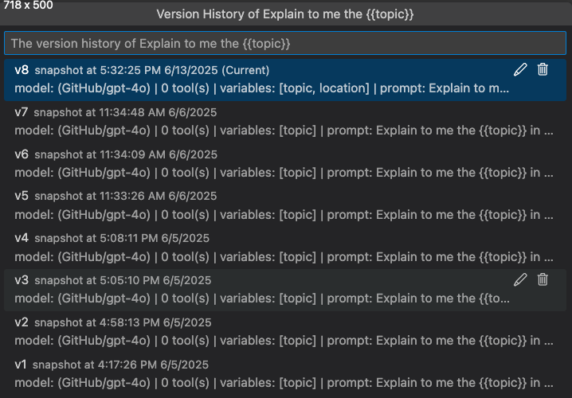
在版本历史记录视图中，你可以：
- 选择版本名称旁边的铅笔图标来重命名版本。
- 选择垃圾桶图标来删除版本。
- 选择版本名称来切换到该版本。
比较版本间的评估结果
你可以在 Agent Builder 中比较不同版本的评估结果。结果以表格形式显示，展示每个评估器的分数以及每个版本的总体分数。
比较版本间评估结果的步骤：
- 在 Agent Builder 中，选择 Evaluation 选项卡。
- 从评估工具栏中，选择 Compare。
- 从列表中选择你要比较的版本。
[!NOTE]
比较功能仅在 Agent Builder 的全屏模式下可用，以便更好地查看评估结果。你可以展开 Prompt 部分来查看模型和提示词详情。
- 所选版本的评估结果显示在表格中，让你可以比较每个评估器的分数以及每个版本的总体分数。
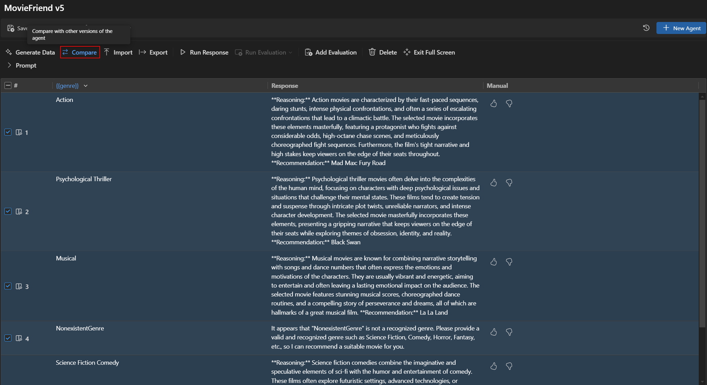
内置评估器
Foundry Toolkit 提供了一组内置评估器，用于衡量模型、提示词和智能体的性能。这些评估器根据你的模型输出和真实数据计算各种指标。
适用于智能体：
- 意图解析（Intent Resolution）：衡量智能体识别和处理用户意图的准确性。
- 任务遵循度（Task Adherence）：衡量智能体在多大程度上完成已识别的任务。
- 工具调用准确性（Tool Call Accuracy）：衡量智能体选择和调用正确工具的能力。
适用于通用场景：
- 连贯性（Coherence）：衡量响应的逻辑一致性和流畅度。
- 流畅度（Fluency）：衡量自然语言质量和可读性。
适用于 RAG（检索增强生成）：
- 检索（Retrieval）：衡量系统检索相关信息的效果。
适用于文本相似度：
- 相似度（Similarity）：AI 辅助的文本相似度测量。
- F1 分数（F1 Score）：响应与真实值之间标记重叠的精确率和召回率的调和平均数。
- BLEU：用于翻译质量评估的双语评估替补分数；衡量响应与真实值之间 n-gram 的重叠程度。
- GLEU：用于句子级别评估的 Google-BLEU 变体；衡量响应与真实值之间 n-gram 的重叠程度。
- METEOR：带显式排序的翻译评估指标；衡量响应与真实值之间 n-gram 的重叠程度。
Foundry Toolkit 中的评估器基于 Azure Evaluation SDK。要详细了解生成式 AI 模型的可观测性，请参阅 Microsoft Foundry 文档。
启动独立的评估作业
- 在 Foundry Toolkit 视图中，选择 TOOLS > Evaluation 以打开评估视图。
- 选择 Create Evaluation，然后提供以下信息：
- 评估作业名称：使用默认名称或输入自定义名称。
- 评估器：从内置或自定义评估器中选择。
- 评判模型：如果需要，选择一个模型作为评判模型。
- 数据集：选择一个示例数据集用于学习，或导入一个包含
query、response和ground truth字段的 JSONL 文件。
- 评估作业名称：使用默认名称或输入自定义名称。
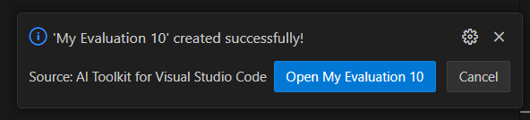
- 验证你的数据集，然后选择 Run Evaluation 以启动评估。
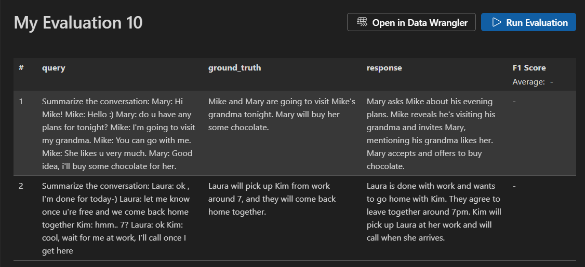
监控评估作业
启动评估作业后，你可以在评估作业视图中查看其状态。
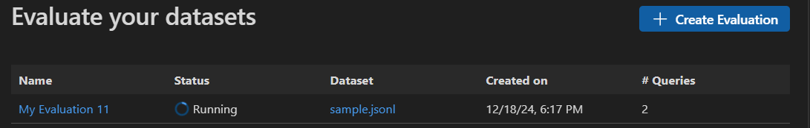
每个评估作业都包含所用数据集的链接、评估过程的日志、时间戳以及评估详情的链接。
查找评估结果
评估作业详情视图会显示每个选定评估器的结果表格。某些结果可能包含聚合值。
你还可以选择 Open In Data Wrangler 以使用 Data Wrangler 扩展打开数据。
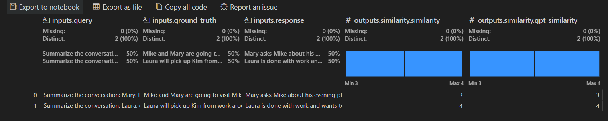
创建自定义评估器
你可以创建自定义评估器来扩展 Foundry Toolkit 的内置评估功能。自定义评估器让你可以定义自己的评估逻辑和指标。
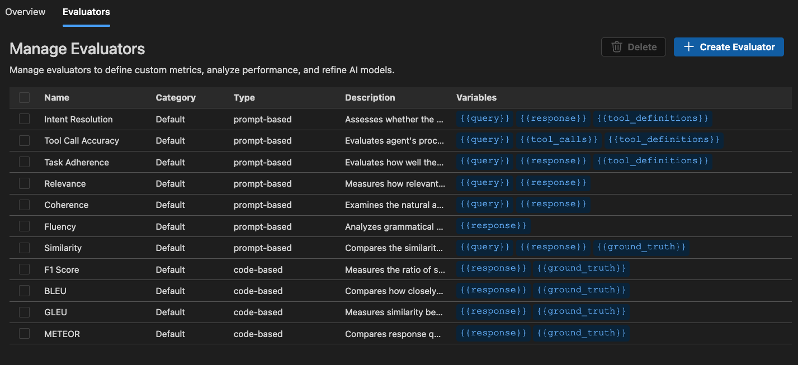
创建自定义评估器的步骤：
- 在 Evaluation 视图中，选择 Evaluators 选项卡。
- 选择 Create Evaluator 以打开创建表单。
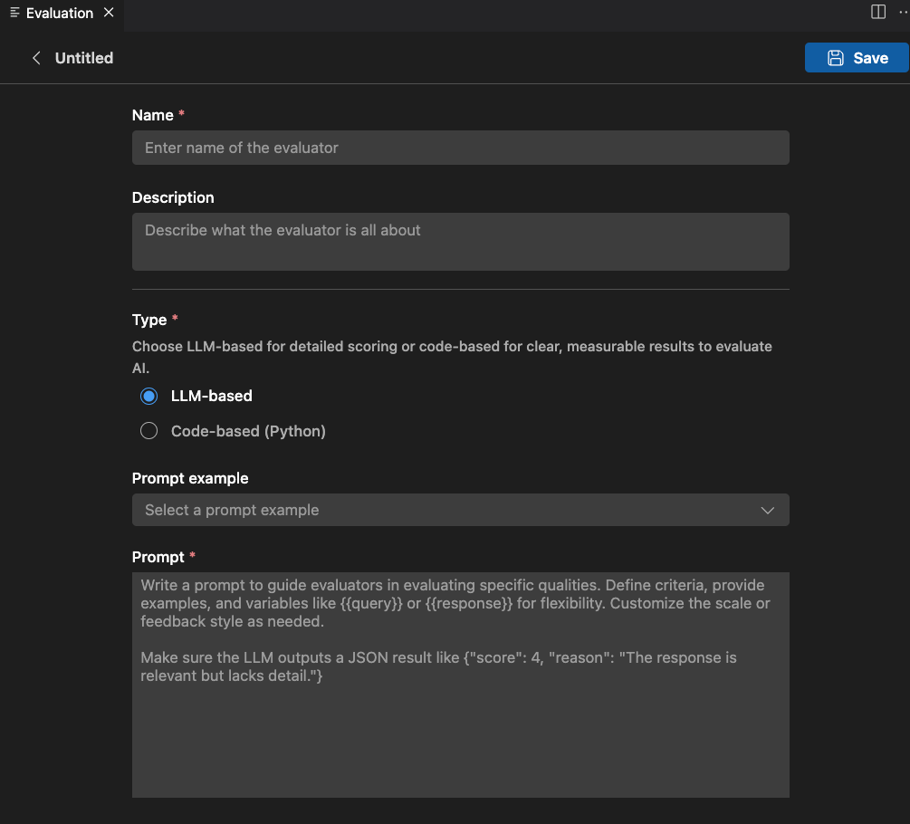
- 提供所需信息：
- 名称：为你的自定义评估器输入一个名称。
- 描述：描述该评估器的功能。
- 类型：选择评估器类型：基于 LLM 或基于代码（Python）。
- 名称：为你的自定义评估器输入一个名称。
基于 LLM 的评估器
对于基于 LLM 的评估器，使用自然语言提示词定义评估逻辑。
编写提示词来指导评估器评估特定质量。定义标准、提供示例，并使用 {{query}} 或 {{response}} 等变量以提高灵活性。根据需要对评分范围或反馈风格进行自定义。
确保 LLM 输出 JSON 结果，例如：{"score": 4, "reason": "响应相关但缺少细节。"}
你还可以使用 Examples 部分来开始使用基于 LLM 的评估器。
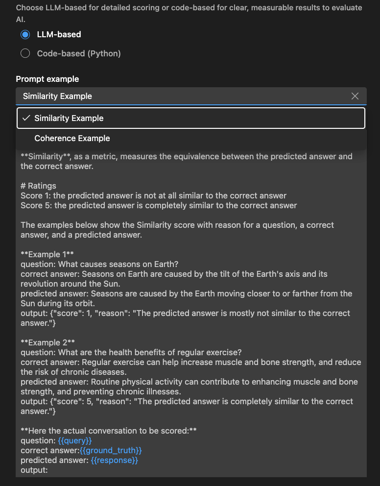
基于代码的评估器
对于基于代码的评估器，使用 Python 代码定义评估逻辑。代码应返回包含评估分数和原因的 JSON 结果。
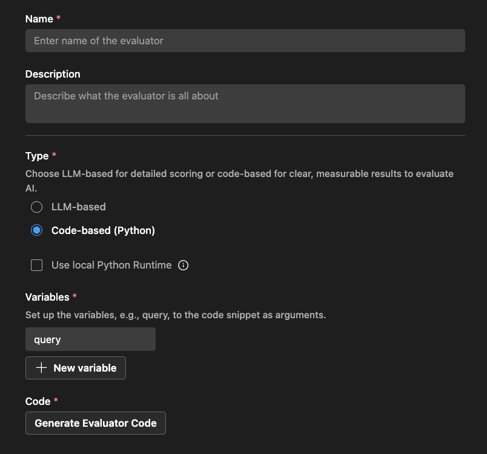
Foundry Toolkit 会根据你的评估器名称以及是否使用外部库来提供一个脚手架。
你可以修改代码来实现你的评估逻辑：
# The method signature is generated automatically. Do not change it.
# Create a new evaluator if you want to change the method signature or arguments.
def measure_the_response_if_human_like_or_not(query, **kwargs):
# Add your evaluator logic to calculate the score.
# Return an object with score and an optional string message to display in the result.
return {
"score": 3,
"reason": "This is a placeholder for the evaluator's reason."
}pytest 评估
使用 pytest 和 Visual Studio Code 的测试工具为你的智能体创建全面的评估。
- 在树视图中导航找到一个智能体并将其选中，以使 Agent Builder 视图显示在主区域中。
- 选择 Evaluation 选项卡。
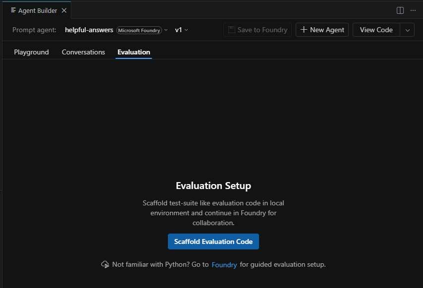
- 选择"Scaffold Evaluation Code"按钮。
- 选择你要搭建脚手架的评估器，然后选择 OK。无论你选择哪个评估器，之后都可以根据需要编辑代码。
- 选择用于创建脚手架测试代码的文件夹。一个新的 Visual Studio Code 实例将会打开，并加载新建的脚手架测试项目。
- 打开
README.md。"Quick Start"部分包含设置步骤（本文也已涵盖）。README.md还包含有助于理解如何修改该项目的附加信息。 - 使用下面的一行命令来创建 Python 环境并安装依赖项。
- Windows
python -m venv .venv; .\.venv\Scripts\activate; pip install uv; uv pip install -r requirements.txt --prerelease=allow - MacOS / Linux
python3 -m venv .venv && source .venv/bin/activate && pip install uv && uv pip install -r requirements.txt --prerelease=allow
- Windows
Ctrl+Shift+P 或 Cmd+Shift+P），运行 Python: Select Interpreter，然后选择新创建的环境。.env 文件并验证你的配置。该文件已预配置了连接到 Foundry 中智能体的连接信息。data.jsonl 文件。该文件包含 JSONL 格式的示例数据。你应该修改此数据，可能需要根据所选评估器的类型添加额外的属性和值。例如，某些评估器可能需要 query、response、context、ground_truth 或其他属性的组合。你可以添加自己的自定义属性，并在测试框架逻辑中处理它们。你学到了什么
在本文中，你学习了如何：
- 在适用于 VS Code 的 Foundry Toolkit 中创建和运行评估作业。
- 监控评估作业的状态并查看其结果。
- 比较不同版本的提示词和智能体的评估结果。
- 查看提示词和智能体的版本历史记录。
- 使用内置评估器通过各种指标来衡量性能。
- 创建自定义评估器以扩展内置评估功能。
- 在不同的评估场景中使用基于 LLM 和基于代码的评估器。